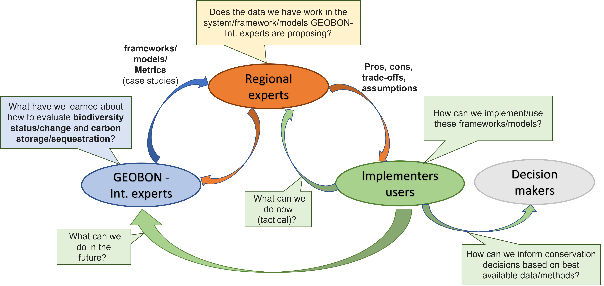

Logistics
Partners
We have identified three operational partners:
GEOBON-International experts. This group will present what models and tools are available in the GEO BON community to measure, assess and monitor co-benefits of ecosystem services derived from carbon storage and biodiversity.
Regional experts. This group will provide an evaluation whether:
models and tools presented are feasible to apply in this region
data currently available are enough for applying proposed models and tools
Implementers/users: PC, ECCC, Indigenous partners, Provincial (MB, ON, QC). This group will respond among others these questions:
How can we implement, use proposed models and tools?
What are the pros, cons, trade-offs and assumptions.
What can be done now (tactical) and in the future?
How can we inform conservation decisions based on the best available data?

Workshop
We will held a workshop with all partners.
Date: October 16 and 17, 2023 (Monday and Tuesday)
Place and venue: Montreal (venue TBD)
Potential Invitiees
| Name | Description | Contact (email) - coming from |
| (TBD) ??? | A person with the ability to operationalize, coordinate and maintain an effective and productive dialog among partners from different expertises and knowledge systems |
Planning
| Name | Expertise | Organization | Contact (email) - coming from |
| Andrew Gonzalez | McGill - GEOBON | Montreal | |
| Maria Cecilia Londoño | IAvH - GEOBON | She will be in Montreal for the conference | |
| Adriana Radulovici | Administrative | GEOBON |
Montreal |
| Juan Zuloaga | Science coordinator | McGill | jzuloaga@gmail.com - Calgary |